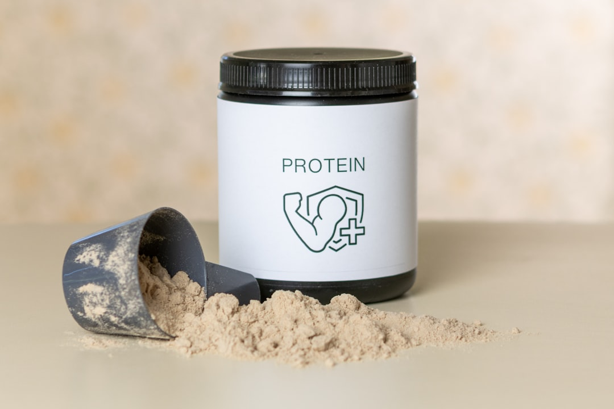
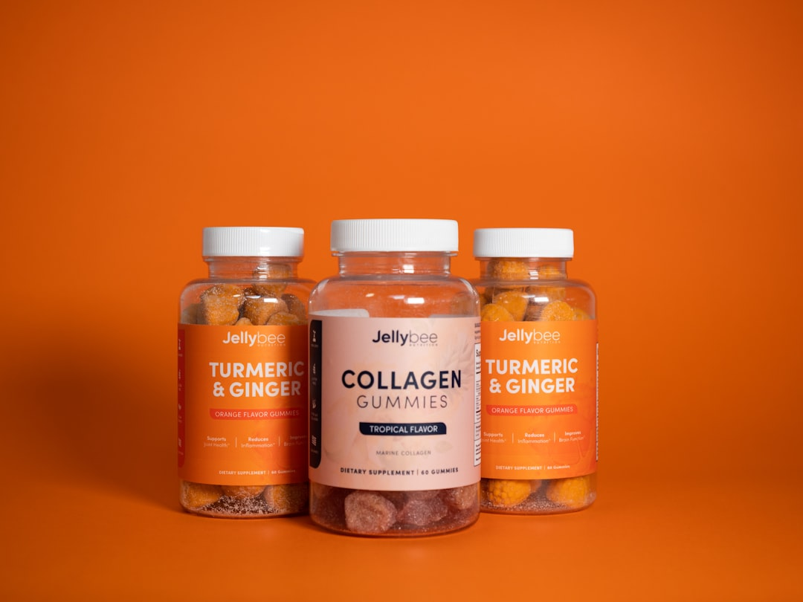
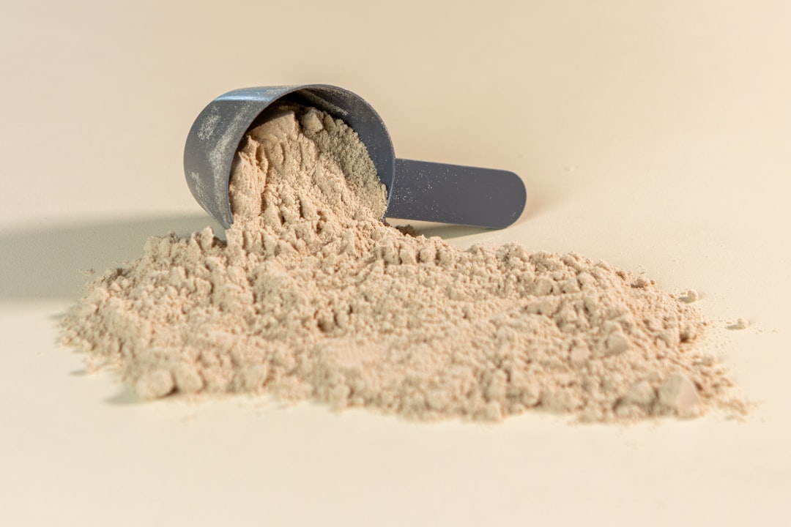

News
Biaxol GB
Biaxol GB
Dosage and Administration
Side Effects and Precautions
Biaxol GB Market and Availability
Biaxol GB Market and Availability
Distribution Channels
Pricing and Insurance Coverage
How to Experience the Hidden Power of Biaxol GB in Just Days
Mar 14, 2025
Unlocking the Hidden Power of Biaxol GB in Just Days In a world that thrives on innovation and technological advancements, discovering something extraordinary often feels like unlocking a new level of potential.. Such is the experience with Biaxol GB, a groundbreaking product that promises to transform your life in ways you never imagined.

How to Revolutionize Your Daily Routine with Biaxol GB: What You Didn't Know
Mar 14, 2025
In the hustle and bustle of modern life, finding ways to optimize our daily routines can feel like searching for a needle in a haystack.. We are constantly bombarded with advice on how to improve productivity, manage time better, and enhance our overall well-being.

How to Transform Your Results Overnight with Biaxol GB – The Ultimate Guide
Mar 14, 2025
How to Transform Your Results Overnight with Biaxol GB – The Ultimate Guide In the pursuit of achieving remarkable results, whether in business, academics, or personal growth, finding the right tools and strategies can often feel like searching for a needle in a haystack.. However, imagine if you could transform your results overnight with one powerful solution.
How to Unlock the Secret Benefits of Biaxol GB for Unmatched Performance
Mar 14, 2025
Unlocking the secret benefits of Biaxol GB can be likened to discovering a hidden treasure trove of performance potential.. In today's fast-paced world, where efficiency and effectiveness are paramount, understanding how to leverage this remarkable compound can give individuals and businesses alike a significant competitive edge.
Innovations in Biaxol GB Technology: Advancements and Applications
Mar 14, 2025
Innovations in Biaxol GB Technology: Advancements and Applications In the rapidly evolving landscape of technology, few innovations have captured the imagination of scientists and engineers quite like Biaxol GB Technology.. This cutting-edge advancement is paving new avenues in various industries, promising to reshape the way we think about efficiency, sustainability, and application-specific performance.
The Impact of Biaxol GB on Sustainable Energy Solutions
Mar 14, 2025
The Impact of Biaxol GB on Sustainable Energy Solutions As the world grapples with climate change and its far-reaching consequences, the quest for sustainable energy solutions has never been more urgent.. In recent years, a revolutionary compound known as Biaxol GB has emerged as a promising player in this critical field.
What is Biaxol GB and How Does It Work?
Mar 14, 2025
Biaxol GB: Unraveling Its Mechanism and Significance In the ever-evolving field of pharmaceuticals, new compounds and formulations are continuously developed to address various medical conditions more effectively.. One such innovative compound is Biaxol GB, which has garnered attention for its potential therapeutic benefits.
What is the History Behind the Development of Biaxol GB?
Mar 14, 2025
The history behind the development of Biaxol GB is a fascinating tale that intertwines scientific innovation, industrial need, and environmental consciousness.. To truly appreciate the significance of Biaxol GB, one must first understand the broader context in which it was developed, as well as the specific challenges it aimed to address. In the late 20th century, the global manufacturing sector underwent a profound transformation.
What is the Purpose of Biaxol GB in Modern Medicine?
Mar 14, 2025
In the swiftly evolving realm of modern medicine, the advent of innovative treatments and therapies has been pivotal in addressing a myriad of health challenges.. Among these advancements is Biaxol GB, a compound that has garnered attention for its potential therapeutic benefits.

What is the Recommended Dosage for Biaxol GB?
Mar 14, 2025
Biaxol GB is a medication that has garnered attention for its effectiveness in treating certain medical conditions.. Understanding the recommended dosage of any medication is crucial, as it ensures both efficacy and safety for the patient.